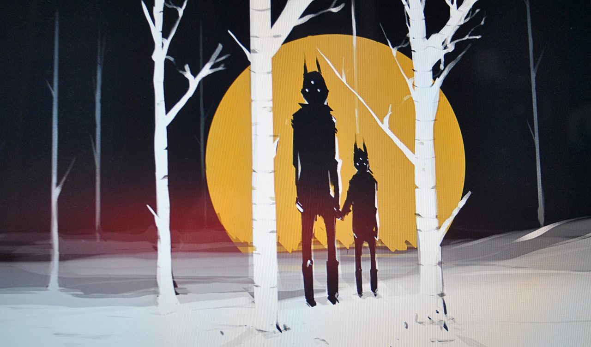
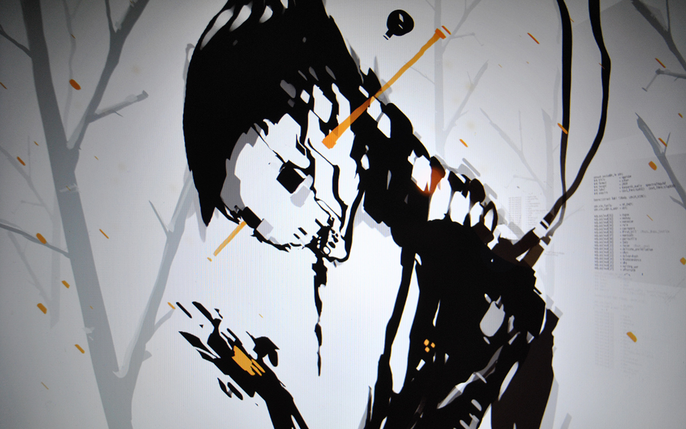
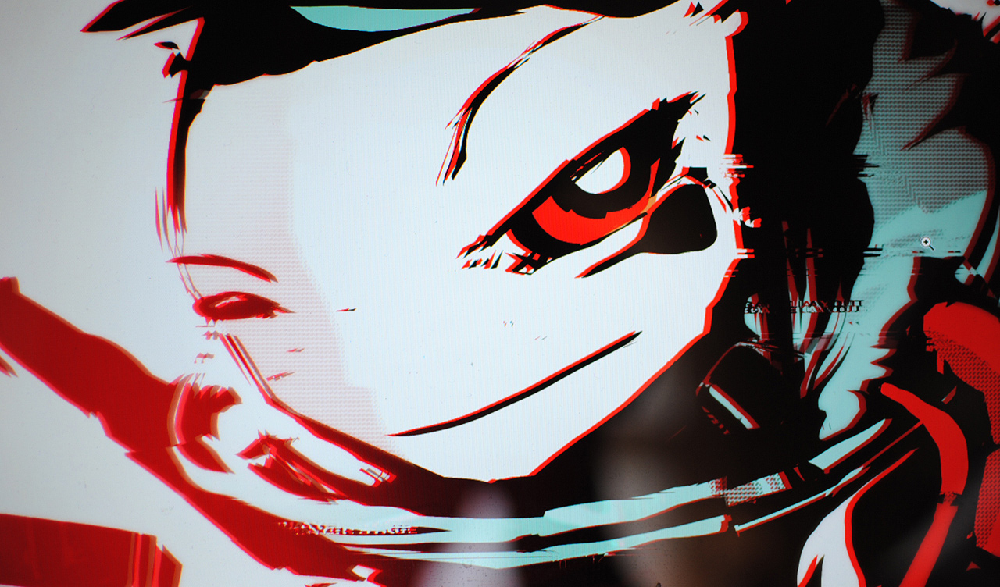
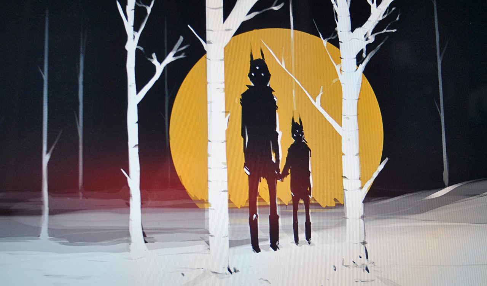
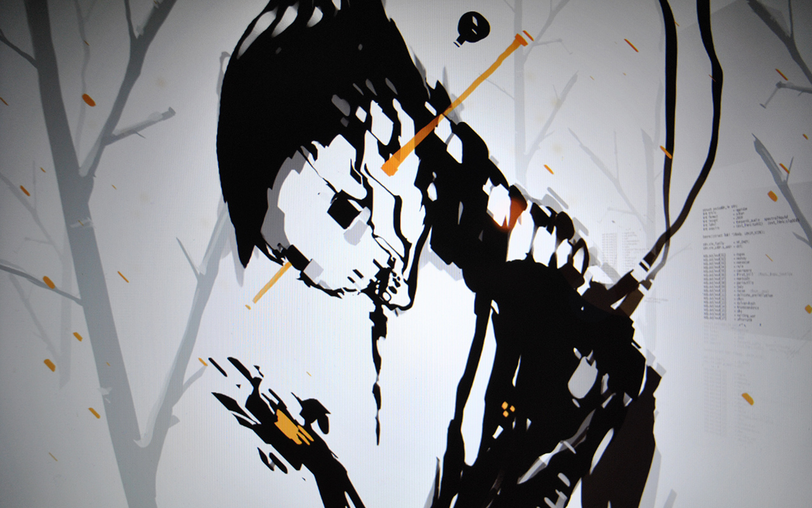
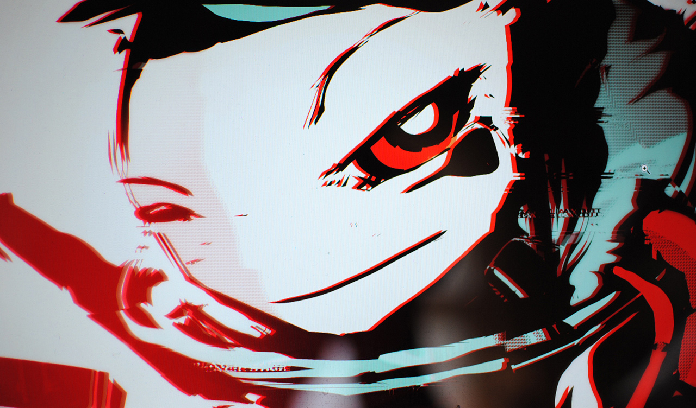

19E10 — Coralinev Bike
19E10 — Coralinev BikeArtwork collection of unrelated concepts and characters.
 13I13 — Space Marine Colour
13I13 — Space Marine Colour 12P06 — Neoneve Afloat Revis
12P06 — Neoneve Afloat Revis 12L02 — Hydro74 Remix12B09 — Veins of brambles11C02 — Yajnev10X11 — Tools to creative
12L02 — Hydro74 Remix12B09 — Veins of brambles11C02 — Yajnev10X11 — Tools to creative 09X02 — Neoneve at the docks
09X02 — Neoneve at the docks 08I11 — When
08I11 — When 08I10 — Time Stands Still
08I10 — Time Stands Still 07X07 — Neoneve Afloat
07X07 — Neoneve AfloatLast update on 19E10, edited 51 times. +344/328fh